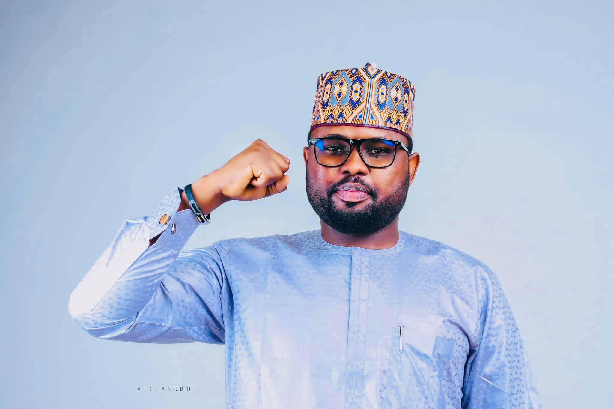

Contact us: 
Contact us:
 Ramat Foundation
Ramat Foundation
Engr.Dr Abdullahi Garba Ramat MNSE,AMB,
A Philanthropist, was born on July 27, 1985, and
attended and graduated from Danrimi Primary School.
He subsequently went on to Junior Secondary School
at Government Technical College Ungogo. He also went
to Dawakin Tofa Science College to earn his Secondary
School Certificate. In his desire for knowledge, he
enrolled in an IJMB program at Kano College of Art,
Science and Remedial Studies (CAS).
Furthermore, he earned his first degree at Bayero University Kano, where he graduated with honours from the Electrical Engineering Department.During hus first at University, he started his own firm under the name AG RAMAT GLOBAL LINKS, an IT-based and computer-intensive institution, in 2008.
Engr. Ramat continued his schooling at Jodhpur International University In India, where he received a Master's Degree in Telecom. In addition, he received his first PhD in Communication and Wireless Networks from VIT in Jaipur, India.
Engr. Ramat is now working on his second PhD in Strategic Management
at Lincoln University College Malaysia. As a business tycoon, he seizes every
chance and turns it into someting spectacular; AG RAMAT GLOBAL LINKS has now
expanded into Nigeria, Chad, India and Dubai. The company's boundaries have been
expanded to include Agriculture, Mining, Import and Export while remaining true
to its basic core course/expertise in computers (Software and Hardware) and other
gadgets.
Furthermore, his Philanthropic work has resulted in the establishment
of the RAMAT FOUNDATION, which focuses on assisting the poor, underprivilleged,
and disadvantaged. On Education, Ramat Foundation has enrolled more than 500
dropout back into school while providing them with essential help during their studies.
It has distributed 200 thousand writing material across primary school in Kano. Of recent,
the foundation has built Islamic School at Zaura, and facilitated the completion of another
primary school at Rangaza Ward.
On health, its organizes health outreach distributing
free drugs and medical assistance. The foundation went to the length of renovating and
building primary health care centers with priority to rural areas. The foundation has
successfully renovated and build a new block in Minjibir and Danrimi Hospitals respectfully.
On 2nd of July 2018, Ramat foundation in collaboration with multipro Inc. India implanted
artificial limbs to 200 amputated patients free.
In 2018, having critically examining
the political catastrophe and his zeal to give back to the society as he has been doing
with RAMAT FOUNDATION, he decided to aspire for the Federal House of Assembly membership
representing Ungogo and Minjibir Constituency under the platform of People Redemption Party (PRP).
Before the general election he made sure PRP wasn’t seen as just a political party or a third force,
but rather the main opposition to the ruling party. By Allah’s doing, he lost the election honorably,
hence his efforts, resilient hard work during the campaigns and his expertise in mobilization, and then.
HE. Dr. Abdullahi Umar Ganduje OFR Khadimul Islam, called upon him to lend a hand in putting Kano first
as he posses the qualities, zeal and the good will. Engr. Ramat, the youngest Director General (DG) of an
agency ever in Kano State saddled with responsibility of street lightening and beautification of metropolis
under the newly KANO STATE METROPOLITAN AGENCY. Engr. Ramat is currently, he is the Executive Chairman of
Ungogo Local Government, Kano State.

We care ! || Service To Humanity
Copyright 2023 © | Powered by Ramat Scholar
 Call No: +234 906 480 9729
Call No: +234 906 480 9729